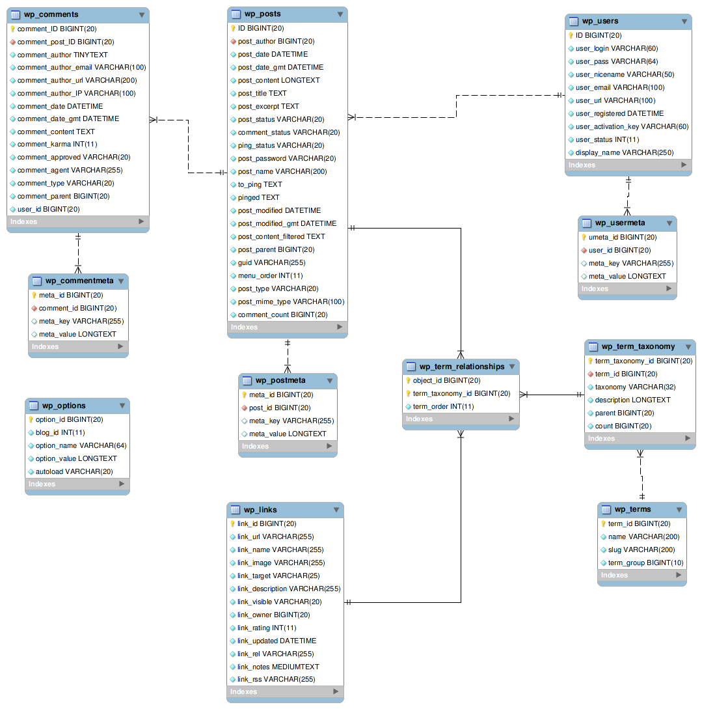
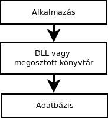
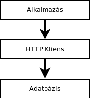
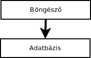

Tartalomjegyzék
1. Bevezetés
5
1.1. Bevezetés
. . . . . . . . . . . . . . . . . . . . . . . . . . . . . . . . .
6
2. Adatbázisok történelme
7
3. Relációs adatbázisok
9
3.1. Kialakulása . . . . . . . . . . . . . . . . . . . . . . . . . . . . . . . . 10
3.2. Jellemzők . . . . . . . . . . . . . . . . . . . . . . . . . . . . . . . . . 10
3.2.1. Előnyei . . . . . . . . . . . . . . . . . . . . . . . . . . . . . . . 10
3.2.2. Hátrányai . . . . . . . . . . . . . . . . . . . . . . . . . . . . . 11
3.3. ORM
Object-relational mapping . . . . . . . . . . . . . . . . . . . . . . . . .
13
4. NoSQL adatbázisok
Az új szemlélet
17
4.1. Bevezetés
. . . . . . . . . . . . . . . . . . . . . . . . . . . . . . . . . 18
4.2. Miben más? . . . . . . . . . . . . . . . . . . . . . . . . . . . . . . . . 20
4.3. Apache CouchDB . . . . . . . . . . . . . . . . . . . . . . . . . . . . . 22
4.3.1. Interfész . . . . . . . . . . . . . . . . . . . . . . . . . . . . . . 23
A HTTP interfész . . . . . . . . . . . . . . . . . . . . . . . . . 25
4.3.2. Az adatmodell . . . . . . . . . . . . . . . . . . . . . . . . . . . 25
Dokumentum (Document) . . . . . . . . . . . . . . . . . . . . 25
Nézet (View) . . . . . . . . . . . . . . . . . . . . . . . . . . . 26
4.4. MongoDB . . . . . . . . . . . . . . . . . . . . . . . . . . . . . . . . . 29
4.4.1. Interfész . . . . . . . . . . . . . . . . . . . . . . . . . . . . . . 30
4.4.2. Az adatmodell . . . . . . . . . . . . . . . . . . . . . . . . . . . 31
Dokumentum . . . . . . . . . . . . . . . . . . . . . . . . . . . 31
Lekérdezések
. . . . . . . . . . . . . . . . . . . . . . . . . . . 32
4.4.3. Fájltárolás . . . . . . . . . . . . . . . . . . . . . . . . . . . . . 33
1
TARTALOMJEGYZÉK
TARTALOMJEGYZÉK
5. Foursquare
36
5.1. Bevezetés
. . . . . . . . . . . . . . . . . . . . . . . . . . . . . . . . . 37
5.2. MongoDB a Foursquare-nél
. . . . . . . . . . . . . . . . . . . . . . . 38
5.2.1. Előnyök . . . . . . . . . . . . . . . . . . . . . . . . . . . . . . 38
5.2.2. Hátrányok . . . . . . . . . . . . . . . . . . . . . . . . . . . . . 39
6. Összefoglalás
40
2
Rövidítésjegyzék
Apache Foundation TODO
Apache webszerver TODO
Autentikációs proxy TODO
BSON
TODO
Cache
TODO
CERN
TODO
CMS (Content Management System) TODO
CRUD
TODO
ETag fejléc (header) TODO
Facebook
TODO
FAT fájlrendszer TODO
Geolokalizáció TODO
Hash függvény TODO
HTML
TODO
HTML5
TODO
HTTP Client TODO
JavaScript
TODO
key-value, kulcsérték TODO
Konzol (MongoDB) TODO
load-balancer TODO
3
TARTALOMJEGYZÉK
TARTALOMJEGYZÉK
Lotus Notes
Ma már IBM Lotus Notes, ugyanis 1995-ben az IBM megvásárolta
Lotus céget
MapReduce
TODO
md hash
TODO
Membase
TODO
Microsoft SQL Server TODO
MySQL
TODO
OOP, MOP
TODO
Oracle Database
PostgreSQL
Reguláris kifejezés
relációs művelet TODO
Replikáció
TODO
RESTful (webservice) TODO
Sharding
a vertikális skálázás egyik formája, ilyenkor egy adatbázis szerver
mesterként funkcionál, bár adatokat nem tárol, és a mester irányítja
a shardingbe bevont kliens szerveket, melyek önállóan működnek,
azonban egyik kliensen sincs meg a teljes adatbázis, mindegyik csak
az információ egy részét tartalmazza
a kliensek nem tudják, hogy ők shardingbe vannak kötve
SOAP (webservice) TODO
SQL
TODO
SQLite
TODO
SSL proxy
TODO
Twitter
TODO
W3C
TODO
Wordpress
TODO
XML
TODO
4
1. fejezet
Bevezetés
5
1.1. BEVEZETÉS
FEJEZET 1. BEVEZETÉS
1.1.
Bevezetés
Az adatbázisok használata a számítógéppel egyidős, az adatok
rendszerezése, karbantartása, kereshetősége a korábbi papíralapú
rendszereknél komoly problémát okozott. A számítógép és internet
alapú világban az adatbázisok használata mindennapossá vált, a szá-
mítógépeken, telefonokon futó alkalmazások legnagyobb része használ
valamilyen adatbázist. Eddig az adatbázis fogalma alatt mindenki egy
relációs rendszerre gondolt, amely sok problémára megoldást nyújt,
azonban legalább ennyire csak szuboptimális. A dolgozat olyan rend-
szereket mutat be, amelyekkel megoldható a vertikális és a horizontális
skálázhatóság, a cachelés és a memória optimális- és maximális ki-
használása, a geolokalizációs információk natív indexelése és keresése,
rugalmas méretű adatsorok, Mindez SQL tudás nélkül, megőrizve a
relációs rendszerek legtöbb előnyét.
A dokumentum-orientált adatbázisokkal az alkalmazások fejlesztése
nem csak felgyorsulhat, hanem olyan problémákra is megoldást nyújt-
hat, melyek megoldása relációs rendszerekkel lehetetlen vagy nagyon
nehéz lenne. A rugalmas méretű adatsorok segítségével az adatbázis
könnyedén felveszi az inkrementális fejlesztés támasztotta elvárásokat,
és áthidalja a relációs adatbázisoknál gyakran felmerülő hézagos adat-
feltöltés miatti átláthatatlanságot.
A memória optimális kihasználásával (akár a teljes klaszter memóri-
áját képes kihasználni), az adatbáziskezelő akár a relációs rendszerek
válaszidejének töredéke alatt tudja kiszolgálni a kéréseket.
Az alapértelmezetten szállított vertikális skálázással (sharding), egy-
egy új szerver bekapcsolása a szolgáltatásba lerövidülhet, ezáltal csök-
kentve az emberi erőforrásigényt, és növelve a szolgáltatásminőséget
és folytonosságot.
6
2. fejezet
Adatbázisok történelme
7
FEJEZET 2. ADATBÁZISOK TÖRTÉNELME
Az adatbázisokat Gajdos Sándor a Budapesti Műszaki és Gazdaság-
tudományi Egyetem adjunktusa a következőképpen definiálja: Adatok
gyors, gépesített tárolása és visszakeresése (Gajdos, 2006).
Az adatbázisok használatára már a elektromechanikus számológépek
idejében felmerült az igény, igaz ekkor még csak lyukkártyára lyukasz-
tották az információkat. Az adatbázisok igazi térnyerése az 1960-as
évekre tehető, amikor a számítógépek megfizethetővé váltak a cégek
számára. Tehát a ’60-as évektől már nem csak a katonai szerepe volt
a számítógépeknek, ezáltal az adatbázisokat használata is előtérbe ke-
rült. Az ekkor használt rendszerek még az adatokat nem egy struktú-
raként kezelték, hanem az egyes rekordokra helyezte a hangsúlyt.
Az igazi áttörést, az IBM által az 1970-es években létrehozott SQL
lekérdező nyelv érte el, amely az iparágban egy de facto szabványként
terjedt el. Ekkor jött létre a relációs adatbáziskezelő rendszer kifejezés
is.
Az 1970-es évek után a mai napig, az adatbázisok kifejezés általában
relációs rendszerrel asszociálható. Természetesen, a relációs rendszerek
mellett megjelentek más adatbázis rendszerek, mely saját lekérdező-
nyelvet használtak, azonban kiderült, hogy ezek sebessége és használ-
hatósa nem veszi fel a versenyt a relációs társaikkal.
8
3. fejezet
Relációs adatbázisok
9
3.1. KIALAKULÁSA
FEJEZET 3. RELÁCIÓS ADATBÁZISOK
3.1.
Kialakulása
A relációs adatbázis kifejezés Edgar Frank Codd1 nevéhez fűződik,
egy 1970-ben kiadott, a "A Relational Model of Data for Large Shared
Data Banks" című cikkében használta először ezt a fogalmat, és írta
le 12 pontban mit ért a kifejezés alatt.
3.2.
Jellemzők
A relációs adatbáziskezelő szoftverek közül a vállalati szegmensben
a legelterjedtebb az Oracle Database, és a Microsoft SQL Server. A
webes alkalmazásoknál előszeretettel alkalmazzák a MySQL illetve a
PostgreSQL terméket. A mobiltelefonokban az alacsony erőforrásigé-
nyéről ismert SQLite adatbázist. Az előző felsorolásból kitűnik, hogy a
relációs adatbázisok felhasználási lehetőségei igen széleskörűek, hiszen
egy bonyolult ERP rendszer, és a mobiltelefonon futó email kliens is
ugyanarra az adatbázisrendszerre épít. A relációs adatbázisokban az
információkat táblákba rendezzük, ezeknek kötött formája van, mivel
előre meg kell határozni milyen oszlopok fognak szerepelni, illetve az
oszlopoknak meg kell adni az adattípusát (szöveg, egész szám, lebegő-
pontos szám, bináris adat, dátum, megjegyzés). Az adatok beviteléhez,
és listázásához (legyen az akár egy grafikus felülettel ellátott adatbázis
kezelő alkalmazás) az SQL lekérdező nyelvet használjuk, mellyel relá-
ciós műveletek segítségével kapjuk meg a megfelelő a információkat.
3.2.1.
Előnyei
Relációk
Mivel a legtöbb adat felírható valamilyen relációs formában vagy
legalább összekapcsolható egy relációs művelettel, ezért az adat-
bázisban szereplő rekordok kapcsolatban vannak egymással.
1Brit tudós, IBM-nél dolgozott
10
3.2. JELLEMZŐK
FEJEZET 3. RELÁCIÓS ADATBÁZISOK
Konzisztencia
A táblák egymás közötti hivatkozásai, idegen kulcsai, amelyet az
adatbázis ellenőriz és nem engedi rossz hivatkozások létrejöttét.
Például egy könyvtári rendszer adatbázisában, olyan könyvet nem
törölhetünk, melyre van hivatkozás a jelenleg kint lévő könyvek
között
Indexelés
Az adatbázisban történő keresést jelentősen felgyorsítja, mivel az
indexfájlban megjelölésre kerülnek a rekordokban szereplő kifeje-
zések, és azok helyei.
Redundancia
Minden relációs rendszer a redundanciamentességre törekszik,
azaz adatok többszöri jelenlétének elkerülésére.
Tranzakciók
A tranzakciók segítségével egy komplex adatbeillesztés (több táb-
lás beszúrások) hibája esetén, nem lesznek félig beillesztett infor-
mációk, ugyanis hiba esetén a tranzakció visszavonható.
A tranzakciók a pénzügyi rendszerek egyik alapja.
3.2.2.
Hátrányai
Rugalmatlanság
Egy relációs adatbázis kevésbé flexibilis, mert nehezen követi
az inkrementális fejlesztés változó követelményeit, problémákat
okozhat a verziókövetés, a visszafelé kompatibilitás.
A különböző tulajdonságokkal rendelkező entitások leírása (pél-
dául egy címjegyzék, ahol a kapcsolatok nagy részének egy vagy
kettő telefonszáma van, de előfordulhat a három telefonszám,
email cím, beosztás és még az egyes kontaktokhoz létrehozott
egyéni mezők kombinációja is).
11
3.2. JELLEMZŐK
FEJEZET 3. RELÁCIÓS ADATBÁZISOK
A hézagos adatfeltöltések, amelyre jó példa az adóbevallás, ahol
mindenkinél szerepel minden kitölthető mező, viszont a kitöltők
mindössze a mezők töredék részét töltik ki.
Relációk
Míg a legtöbb információ leírható relációkkal, azonban egy kö-
zösségi oldalnál, ahol a felhasználók rengeteg mezőt kitölthetnek
(név, lakcím, iskolák, email címek, stb.), és még saját mezőket is
felvehetnek, a relációkat gyakran kudarcot vallanak. A problémát
jól szemléltetheti egy gyógyszeradatbázis, ahol ki kell tölteni min-
den gyógyszer alapanyagát, ez bizony sok oszlopot eredményez a
táblákban, amelyek hézagos kitöltéssel és a NULL értékekkel a
relációkat felborítják.
Gyakran a sok relációval leírt adatok lekérdezése időigényes lehet,
illetve sok információt nehéz leírni relációval, vagy az adatbázist
feleslegesen bonyolultá teszi, éppen ezért megfigyelhető, hogy a
komolyabb adattárházakban nem minden adatbázis a lehető leg-
optimálisabb, mivel dönteni kell a teljesítmény és az áttekinthe-
tőség között
Fregmentáció
Az adatbázis valamilyen bináris fájlként a lemezen tárolódik, ha
az adatbázis séma módosul egy új oszlop hozzáadásával, akkor
már nem tudja az adatbáziskezelő rendszer hozzáfűzni az új osz-
lopot a fájlhoz, hanem a lemezen a következő szabad részre ke-
rül, így az adott táblából történő olvasáskor a diszk olvasófeje
folyamatosan ugrálni fog, ezáltal válaszidők meghosszabbodását
okozva. De hasonlóan problémás egy oszlop törlése, mivel az adat-
bázis fizikai méretének csökkenésével nem jár. Az adatbázis fájl-
szerkezetét leginkább a FAT fájlrendszerhez lehetne hasonlítani,
ahol a fregmentáció miatt gyakran szükséges töredezettségmen-
12
3.3. ORM
OBJECT-RELATIONAL MAPPING
FEJEZET 3. RELÁCIÓS ADATBÁZISOK
tesítést futtatni.
Ez a probléma nem érinti az adatbázisban tárolt megjegyzéseket
és bináris állományokat, mert azok az adatbázisrendszer külön
tárolja (az oszlop méret flexibilis mivolta miatt).
Hosszú válaszidők
A nagy adatbázisoknál gyakori probléma, hogy a sok relációs kap-
csolat hosszú válaszidőket okoz (sok táblás JOIN műveletek).
Bináris fájltárolási problémák
A legtöbb relációs adatbázis támogatja a fájlok tárolását, azonban
egy-egy fájllekérés hatalmas plusz terhelést ad a szervernek, így
általában nem alkalmazzák
Memória (optimális) kihasználása
Az egyes adatbázisrendszerek nem használják, vagy nem optimá-
lisan használják ki a memória által nyújtott cachelési lehetősége-
ket, ennek egyik oka, hogy a 32 bites architektúrákban a memória
maximum 3 gigabájtig címezhető, így az adatbáziskezelő mindig a
lemezre írta, és a lemezről olvasta az információkat, ezáltal hosszú
válaszidőket eredményezve.
3.3.
ORM
Object-relational mapping
Az ORM egy olyan programozási technika, melynek segítségével
egy relációs adatbázist objektumokká tudunk konvertálni.
Miért van erre szükség?.
Egyrészt a ma használt programozási nyel-
vek legnagyobb része objektum- vagy legalább metaobjektum orien-
tált, azaz leegyszerűsítve egy elemnek vannak tulajdonságai és speci-
13

3.3. ORM
OBJECT-RELATIONAL MAPPING
FEJEZET 3. RELÁCIÓS ADATBÁZISOK
ális függvényei, illetve tudnak egymásból öröklődni és egymást kiegé-
szíteni. Másrészt pedig nagy adatbázisoknál komoly problémát okoz
az relációk felépítése a táblák között, mert olyan sok adatot tartal-
maznak, a 3.3 ábra ezt kívánja szemléltetni.
3.1. ábra. A népszerű Wordpress CMS adatbázisának felépítése
A Wordpress, az egyik legismertebb PHP alapú tartalomkezelő
14
3.3. ORM
OBJECT-RELATIONAL MAPPING
FEJEZET 3. RELÁCIÓS ADATBÁZISOK
rendszer, 2011. áprilisában közel 20 millió weboldalnál és blognál
alkalmazzák.
Az adatbázisának felépítése egyszerűnek mondható, bár már itt
is problémát okozhat a különböző táblák és a táblákban szereplő
oszlopok fejben tartása. Egy ERP rendszernél, ahol több száz tábla
is lehet, táblánként több tíz oszloppal az átláthatóság szinte lehetetlen.
A ORM használatakor a programozási nyelv SQL mondatokká
alakítja a kérést, majd az adatbázis által visszaadott választ a me-
móriában objektumokká alakítja, később az adatbázis írásakor az
objektumokat visszaalakítja SQL mondatokká.
Fontos megemlíteni az ilyenkor használt két technikát, az optimista
és a pesszimista zárolást.
Optimista zárolás.
Az optimista esetén a lekérdezés lefut, az adatok
kiírásra kerülnek, majd visszaíráskor az adatbázis különböző időbé-
lyegzők (timestamp) alapján eldönti, hogy frissült-e az adatbázis,
tehát míg az egyik kliens módosítja az információkat addig mások
hozzáférhetnek és akár ők is módosítják.
Pesszimista zárolás.
A pesszimista zárolás esetén, ha egy kliens
szerkesztésre megnyit valamit, akkor zárolásra kerülnek az adott
sorok az adatbázisban, majd módosítás elküldése után válik lehetővé
a többi kliens számára a módosítás, tehát ha egy kliens szerkeszti, a
többiek csak megtekinteni tudják az információkat, a módosítás nem
lehetséges.
Azt, hogy az optimista vagy a pesszimista zárolást használjon
15
3.3. ORM
OBJECT-RELATIONAL MAPPING
FEJEZET 3. RELÁCIÓS ADATBÁZISOK
egy alkalmazás, az erősen függ a tárolt adatoktól. Például egy pénz-
ügyi rendszer valószínűleg a pesszimista módszert fogja választani,
míg egy egyszerű blognak megfelelő választás az optimista is.
16
4. fejezet
NoSQL adatbázisok
Az új szemlélet
17
FEJEZET 4. NOSQL ADATBÁZISOK
4.1. BEVEZETÉS
AZ ÚJ SZEMLÉLET
4.1.
Bevezetés
Az előző fejezetben bemutatásra kerültek relációs adatbázisok, sok
pozitív tulajdonsággal rendelkeznek ezért sok helyen, formában al-
kalmazzák őket, mivel a legtöbb a probléma megoldásához kiválóan
használhatóak. Azonban, mint a legtöbb rendszernél itt is szükséges
kompromisszumokat kötni, rendelkeznek hátrányokkal is (3.2.2). Ezek
a problémák nem érintenek minden alkalmazást, azonban egy-egy al-
kalmazásban nem biztos, hogy egy relációs adatbázis a tökéletes meg-
oldás, az ilyen problémák megoldására jöttek létre a NoSQL adatbá-
zisok.
Az első komolyabb adatbázis, amely szakított a klasszikus relációs
megvalósítási formával az 1989-ben megjelent Lotus Notes szerver ol-
dali komponense a Lotus Domino volt. Természetesen már korábban
is voltak próbálkozások, egészen pontosan az 1980-as években kifej-
lesztett BerkleyDB, vagy a szintén ekkor készült GT.M megoldás, de
ezek nem tudtak elterjedni, illetve említésre méltó piaci részesedést
elérni, ugyanis az 1980-as években sem az (adatbázist használó) alkal-
mazások száma nem volt magas, sem az alkalmazások nem igényeltek
ennyire rugalmas adattárolási technikákat.
A következő említésre méltó adatbáziskezelő az 1997-ben elkészült Me-
takit volt, melyet az első dokumentum-orientált adatbázisnak is tarta-
nak, a termék sikerességét mutatja, hogy az Apple Mac OS X terméké-
ben ezt használták a címjegyzék adatbázisának. A Metakit legutóbbi
verziója 2007-ben jelent meg és a fejlesztői levelezőlistája még a mai
napig aktív.
A bizonyos dotkomlufi kipukkanása a NoSQL adatbázisoknak is
hatalmas lökést adott, melyet a következő felsorolás szemléltet:
Memcached (2003)
Key-value (kulcs-érték), bárki számára ingyenesen használható
18
FEJEZET 4. NOSQL ADATBÁZISOK
4.1. BEVEZETÉS
AZ ÚJ SZEMLÉLET
adatbázis, amely a memóriában tárolja az adatokat, így biztosítva
a rövid válaszidőket. Számos projektben használják átmeneti tá-
rolóegységként (cache), ezáltal csökkentve az adatbázisrendszer
terhelését, és az alkalmazás erőforrásigényét.
Mivel a Memcached csak kulcs-érték adatbázis, így csak nagyon
egyszerű adatstruktúrát érdemes benne tárolni, szerializált szöve-
gek használatával bonyolultabb struktúrákat elhelyezése is meg-
oldható, azonban ekkor le kell mondani a keresésről, és az inde-
xelhetőségről.
Google BigTable (2004)
A Google saját fejlesztésű teljesen zárt adatbázisa, külső fejlesz-
tőknek számára nem érhető el, ma már a legtöbb Google termék
ezt használja (Reader, Youtube, Mail, Maps).
Apache CouchDB (2005)
Az Apache Foundation termékét a Lotus Notes ihlette adatbázis
alapjaira fejlesztették, az igazi elterjedése az elmúlt két évben
indult meg. A CouchDB-vel a 4.3 fejezet foglalkozik bővebben.
A következő időszak, amelyet körülbelül 2005-től számítunk a we-
bes alkalmazások folyamatos térnyerése idézte elő. Ide tartozik a Go-
ogle email szolgáltatása, a GMail, a Twitter, és a Facebook. Ekkor
(2007) jelent meg, a mára komoly hírnevet kivívó adatbázis, a Mon-
goDB, mely későbbiekben részletesen bemutatásra kerül a 4.4 fejezet-
ben. 2008-ban pedig a Facebook által nyílt forráskódúvá (open-source)
tett Cassandra projekt, amelynek fejlesztéséért az Apache Foundation
a felelős. A Cassandra a kimagaslóan jó skálázhatóságának köszönhe-
tően ma már a Facebook, és a Twitter is ezt használja. A Cassandra
skálázása és replikációja mögött a peer-to-peer technológia áll, ezáltal
növelve az adatbázis rendelkezésre állási idejét.
2010-ben jelent meg a Membase, a Memcached klaszterekre szánt ver-
19
FEJEZET 4. NOSQL ADATBÁZISOK
4.2. MIBEN MÁS?
AZ ÚJ SZEMLÉLET
ziója, melynek segítségével akár egy több száz gépből álló szerverpark
memóriája válik használhatóvá gyorsítótárazásra.
4.2.
Miben más?
A NoSQL adatbázisok létrejötte az ún. új típusú alkalmazások
megjelenésének köszönhető. De mit is jelent az új típusú? A következő
egyszerű példán keresztül hamarabb megérthetjük:
Van egy regisztrációs űrlap, amit a cég ügyfeleinek kell kitölteni az
adott cég honlapján. Szerepelnek az űrlapon az ügyfél legfontosabb
információi (név, lakcím, születési dátum, fénykép, beszélt nyelvek).
A szerveroldalon egy relációs adatbázisba kerülnek elmentésre az
adatok. Ezzel idáig nincs is semmi probléma, az ügyfelek kitöltik, a
cég pedig tud keresni, szűrni a kitöltött űrlapok között illetve meg
tudja tekinteni őket.
De mi történik ha fel kell venni a mezők közé még egy plusz in-
formációt (telefonszám, Facebook profil)? Amennyiben nincs erre
felkészítve a rendszer, bár ha fel is van, biztosan nem lesz tökéletes
az adatbázis struktúra, ugyanis ebben az esetben a különböző mezők
típusa vagy mindig szöveg, vagy rengeteg felesleges oszlop lesz az
adatbázisunkban, így elérve, hogy minden adat a neki megfelelő típus-
ban legyen elmentve (szöveg, dátum, fájl). Tehát ha nincs felkészítve
az adatbázis erre, akkor fel kell venni a kapcsolatot a honlapot készítő
céggel, és nekik ki kell ezt javítani a honlapon, mind a szerver-, mind
a kliensoldalon és az adatbázisban is, ez arányaiban véve nagyon sok
idő. Ehhez a munkához szükség van legalább az adatbázisért felelős
személyre, egy kliens- és egy szerveroldali programozóra.
Azonban mi történik, ha egy NoSQL adatbázis dolgozik a háttérben?
Az eredeti feladat megoldása itt sem okoz komolyabb problémát,
viszont ha ki kell egészíteni azzal a bizonyos plusz mezővel, könnyedén
20
FEJEZET 4. NOSQL ADATBÁZISOK
4.2. MIBEN MÁS?
AZ ÚJ SZEMLÉLET
megtehető (az adatbázis módosítása nélkül), ugyanis nincs megkötve,
hogy hány oszlopból kell állnia egy sornak, illetve milyen adattípus
szerepelhet az adott oszlopokban (gyenge típusosság).
Ezek után könnyen levonatható a tanulság, hogy milyen rend-
szerekben alkalmazható jól egy NoSQL adatbázis: folyamatosan
módosuló adatszerkezeteknél, a felhasználók által testreszabható
megoldásoknál, illetve az eltérő entitásokkal rendelkező adatstruktú-
ráknál.
Bár a dokumentum-orientált adatbázisok eme rugalmassága egy ké-
nyelmes megoldásnak tűnik a relációs adatbázisokhoz képest, azonban
ezt már a legkorábbi key-value adatbázisok is könnyedén meg tudták
oldani. A NoSQL adatbázisok valódi sikerének kulcsa azokban a
szolgáltatásokban rejtezik, melyet a mai modern alkalmazásfejlesztési
problémák hoztak a felszínre:
Teljes szöveges keresés (full-text search)
A teljes szöveges keresés lehetősége a legtöbb relációs adatbázis-
ban megtalálható, azonban a fejlesztők ahol lehet, megpróbálják
az adatkeresés ezen a módját elkerülni lassúsága miatt.
az SQL nyelv
Az SQL nyelv bármennyire is beszélt nyelv közeli, egy komolyabb
méretű adatbázisnál problémákat okozhat (erre jelenthet megol-
dást a 3.3 fejezetben kifejtett ORM).
Problémák forrása lehet, a tíz tábla feletti, szűréssel és aggregá-
cióval ellátott lekérdezések megírása és átlátása.
SQL-ben nem jellemző, hogy a fejlesztők kommentekkel egészíte-
nék ki az SQL mondatokat, amely szintén megértési problémát
okozhat.
21
FEJEZET 4. NOSQL ADATBÁZISOK
4.3. APACHE COUCHDB
AZ ÚJ SZEMLÉLET
Geolokalizáció
Ma már sok alkalmazás használ geolokalizációt, gondoljunk itt
a legtöbb közösségi hálózatra (Facebook, Twitter), vagy éppen a
webes térképszoftverekre (Bing Maps, Google Maps).
Bináris fájlok tárolása
A legtöbb NoSQL adatbázist fájltárolási támogatással szállítják,
amely szakít a relációs rendszerek bináris állományok tárolásá-
nak technikájával. A fájlok strukturáltan tárolódnak, általában
szétdarabolva, a gyors elérés érdekében.
Horizontális, vertikális skálázhatóság
A horizontális skálázás a legtöbb relációs rendszerben megtalál-
ható, ezt nevezik replikációnak, azonban ilyenkor a kliens (slave)
vár a mester (master ) szerverre üzenetére, hogy milyen változás
történt az adatbázisban, amelyet a kliens is végrehajt. A verti-
kális skálázás is általában replikációval történik, azonban ez nem
kliens-mester replikáció, hanem mester-mester, ahol minden szer-
ver kliensként és mesterként is rész vesz a kommunikációban.
4.3.
Apache CouchDB
A CouchDB az Apache webszerver fejlesztéséért is felelős Apache
Foundation terméke. Az első verzió 2005-ben jelent meg. Az adatbá-
zis felépítése erősen hasonlít a IBM Lotus Notes termékére, ugyanis a
projekt vezető fejlesztője, Damien Katz, korábban a Lotus Notes fej-
lesztésében is részt vett.
Az információk tárolása adatbázisokban és dokumentumokban tör-
ténik. Az adatok eléréséhez nincs szükség SQL tudásra, ugyanis Ja-
vascript segítségével végezhetők el a szűrések -amelyet nézetnek (view-
nak) neveznek, egészen pontosan a MapReduce használatával.
22


FEJEZET 4. NOSQL ADATBÁZISOK
4.3. APACHE COUCHDB
AZ ÚJ SZEMLÉLET
4.3.1.
Interfész
A CouchDB felépítése eltér a klasszikus adatbázisoktól. Az 4.1
ábrán látható egy alkalmazás általános kapcsolódási interfésze, itt az
alkalmazás natív driverekkel (DLL fájl, vagy megosztott könyvtár)
kapcsolódik az adatbázishoz.
4.1. ábra. Példa egy általános kapcsolódási interfészre
A 4.2 ábrán látható, ahogyan egy alkalmazás csatlakozhat CouchDB-
hez, itt azonban nincs szükség, semmilyen illesztőre, mindössze egy
HTTP kliensre. Ennek az az előnye, hogy bármilyen programozási
nyelvből indítható kérés az adatbázis felé. Persze ennek van hátránya
is, a lekérések nem lesznek olyan gyorsak, mint egy natív driver
segítségével.
4.2. ábra. Kapcsolódás CouchDB-hez szerver oldali rétegen keresztül
Viszont a 4.3 ábrán látható kapcsolódás, már talán jobban meg-
magyarázza, miért jó a HTTP interfész. Ha egy weboldalt veszünk
23

FEJEZET 4. NOSQL ADATBÁZISOK
4.3. APACHE COUCHDB
AZ ÚJ SZEMLÉLET
példának, akkor a kliens maga a böngésző lesz, akkor szerveroldali
programozási nyelv használata nélkül lehetségessé válik az informá-
ciók megjelenítése.
Miért jó ez?
Az egyszerű honlapoknál, a szerveroldali rész (legyen az PHP,
ASP.NET vagy Perl) feladata mindössze annyi, hogy kapcsolódik az
adatbázishoz, majd a lekérdezés eredménye alapján, felépíti a meg-
felelő HTML oldalt. Ha levesszük HTML tartalom összeállításának
terhét a szerverről, tehát kliensoldalon építjük fel, rengeteg erőforrás
spórolható meg, ezáltal költséghatékonyabb szerver üzemeltetést ér-
hető el, így tulajdonképpen az ügyfél erőforrásaival fizet a szolgáltatás
használatáért.
Azonban ennek a technikának is van hátránya, mivel ami a webolda-
laknál kliensoldalon (böngészőben) történik az bárki számára látható,
ezért itt kiemelt szerepet kap a biztonság. Szerencsére a CouchDB
nyújt lehetőséget a különböző adatbázisok jelszóval levédésére, illetve
kívülről láthatatlanná tételére. Ilyenkor fontos, hogy csak azokat az
adatbázisokat legyenek engedélyezve megtekintésre (kliensoldalról
elérhető), amelyek nem tartalmaznak érzékeny információkat, például
a regisztrált felhasználók vagy az adminisztrátorok személyes adatai.
4.3. ábra. A kliens közvetlen kapcsolódása az adatbázishoz
24
FEJEZET 4. NOSQL ADATBÁZISOK
4.3. APACHE COUCHDB
AZ ÚJ SZEMLÉLET
A HTTP interfész
A CouchDB HTTP interfésze egy RESTful webszolgáltatás, mely
jelentősen eltér a webszolgáltatások által korábban preferált SOAP
technikától. Itt ugyanis nem egy XML fájl segítségével történik a web-
szerver utasítása, hanem standard HTTP kérésekkel. Dokumentumok
lekérdezése GET-, egy adott dokumentum lekérdezése (az azonosítója
megadásával) szintén GET kéréssel történik. A létrehozás POST, a
frissítés PUT (azonosító megadása szükséges), míg a törlés DELETE
(azonosító megadása szükséges) kérés küldésével hajtható végre. Meg-
figyelhető, hogy a kérések mennyire jól tükrözik a CRUD műveleteket.
Miért HTTP, és nem natív interfész?.
A HTTP interfész nagy előnye,
hogy ugyanazok az eszközök használhatók a performancia javítása
érdekében, mint a webes alapú rendszereknél: terhelés elosztás (load-
balancer), gyorsítótárak (cache), SSL- és autentikációs proxy. Például
a dokumentumok revíziós száma kiválóan használható ETag fejlécként
a cache szerveren.
4.3.2.
Az adatmodell
Dokumentum (Document)
A CouchDB adatstruktúrájának legfontosabb része a dokumentum,
amely megközelítőleg a relációs adatbázisok megadott táblájának egy
sorának feleltethető meg. Egy dokumentumban mezők találhatóak,
melyek kulcs-érték formában jelennek meg. A kulcs bármilyen szöveg
lehet, míg az érték a következők egyike:
• szöveg (string)
• egész szám (integer)
25
FEJEZET 4. NOSQL ADATBÁZISOK
4.3. APACHE COUCHDB
AZ ÚJ SZEMLÉLET
• lebegőpontos szám (float)
• dátum (Javascript Date)
• objektumok (Javascript object, Array)
Továbbá tartalmazhat hivatkozásokat más dokumentumra (URL-k),
azonban nem kerül ellenőrzése a hivatkozás, illetve az adatbázis nem
tartja fenn a konzisztenciát.
A dokumentumok egymásba nem ágyazhatók.
A 4.4 ábrán látható a dolgozat egy részlete CouchDB adatbázis-
ban tárolva. A dolgozat címe, készítési ideje, és tartalma hasonlóan
van tárolva, mint egy relációs rendszerben, azonban megfigyelhető,
hogy míg egy relációs adatbázisban a címkékhez és a kommentekhez
biztosan szükséges lenne egy kereszttábla beiktatása, itt egyszerűen
egy tömbbel kifejezhetjük az egy a többes kapcsolatot.
A dokumentum azonosítója ("_id" mező) egy 128 bites, automati-
kusan generált érték (tehát a CouchDB egy adatbázisban maximum
3.438 dokumentumot tud tárolni). A revíziós szám is egy generált
érték, azonban ez csak 32 bites, és egy hash függvény állítja elő.
A revizíós szám használatával a dokumentum minden frissítéskor,
fizikailag egy új dokumentum jön létre. A lekérdezésekben ez nem
látható, ez mindössze a CouchDB-nek szükséges, ugyanis így tárolja
különböző verziókat és a revíziós számmal oldja meg a tranzakciókat
illetve replikációt is (Anderson, Lehnardt and Slater, 2010).
A dokumentumok szerializált JSON adatként kerülnek a lemezre.
Nézet (View)
CouchDB-ben minden lekérdezést, csoportosítást, sorba rendezést
nézetnek neveznek.
26
FEJEZET 4. NOSQL ADATBÁZISOK
4.3. APACHE COUCHDB
AZ ÚJ SZEMLÉLET
1
{
2
" _id ": " a 0 4 0 e 0 0 4 1 8 9 9 6 a e 9 6 e 9 1 e f 9 9 8 f 0 0 0 e e a " ,
3
" _ r e v ": "1 -3 f a b 4 4 5 2 6 d 5 d 7 d 3 a 5 2 a b 1 7 6 1 b 3 2 3 a b 6 2 " ,
4
" cím ": " D o k u m e n t u m - o r i e n t ált a d a t b á z i s o k " ,
5
" címkék ": [" n o s q l " , " c o u c h d b " , " skálá z h a t óság " , " m a p r e d u c e "] ,
6
" lé t r e h o z v a ": " Wed Apr 20 2 0 1 1 1 1 : 4 5 : 1 5 GMT + 0 2 0 0 ( C E S T )" ,
7
" t a r t a l o m ": " C o u c h D B az A p a c h e F o u n d a t i o n t e r m éke ..." ,
8
" k o m m e n t e k ": [{
9
" f e l h a s z n áló": {
10
" név ": " f e l h a s z n áló1" ,
11
" ip ": " 1 2 . 1 2 . 1 2 . 1 2 "
12
} ,
13
"ü z e n e t ": " C o u c h D B - a d o k u m e n t u m - o r i e n t ált a d a t b ázis ."
14
}] ,
15
" _ r e v s _ i n f o ": [{
16
" rev ": "1 -3 f a b 4 4 5 2 6 d 5 d 7 d 3 a 5 2 a b 1 7 6 1 b 3 2 3 a b 6 2 " ,
17
" s t a t u s ": " a v a i l a b l e "
18
}]
19
}
4.4. ábra. Egy egyszerű CouchDB dokumentum
A nézetek JavaScriptben írt függvények, amelyek nem tudják
módosítani az adatbázisban tárolt adatokat, csak a elvégzik a szűrést
(vagy csoportosítást, vagy éppen a sorba rendezést).
A JavaScript függvények MapReduce alapúak, tehát minden függ-
vénynek létezik egy map és egy reduce része.
Map.
A map függvénynek egy paramétere van, ez pedig egy doku-
mentum, a függvényben itt végezhető az adott dokumentumra vonat-
kozó szűrés. A 4.5 ábrán látható a CouchDB map függvénye használat
közben, ahol a dokumentum címére szűrünk rá, tehát kijelenthető,
hogy a map megfelel a relációs adatbázis adatbázis szűrés (WHERE)
záradékának.
Amennyiben a cím megfelel a feltételnek, akkor átadásra kerül reduce
függvénynek az emit használatával. Introduction to CouchDB Views
27
FEJEZET 4. NOSQL ADATBÁZISOK
4.3. APACHE COUCHDB
AZ ÚJ SZEMLÉLET
1
f u n c t i o n ( d o c u m e n t ) {
2
if ( d o c u m e n t . t i t l e === " D o k u m e n t u m - o r i e n t ált a d a t b á z i s o k " ) {
3
e m i t ( null , {
4
" cím ": d o c u m e n t [ " cím " ] ,
5
" címkék ": d o c u m e n t [ " címkék " ] ,
6
" lé t r e h o z v a ": d o c u m e n t [ " lé t r e h o z v a " ] ,
7
" t a r t a l o m ": d o c u m e n t [ " t a r t a l o m " ]
8
" k o m m e n t e k ": d o c u m e n t [ " k o m m e n t e k " ]
9
});
10
}
11
}
4.5. ábra. A CouchDB Map függvénye
2011
1
f u n c t i o n ( d o c u m e n t ) {
2
d o c u m e n t . c o m m e n t s &&
3
d o c u m e n t [ " k o m m e n t e k " ]. f o r E a c h ( f u n c t i o n ( k o m m e n t ) {
4
e m i t ( k o m m e n t [ " f e l h a s z n áló" ][ " név " ] , 1 );
5
});
6
}
7
8
f u n c t i o n ( nev , k o m m e n t S z a m ){
9
r e t u r n {
10
" f e l h a s z n álónév ": nev ,
11
"ö s s z e s ": sum ( k o m m e n t S z a m )
12
}
13
}
4.6. ábra. A CouchDB map és reduce függvénye
Reduce.
A Reduce függvény alkalmazása opcionális, segítségével
aggregálható a map által szűrt információ. A 4.6 kódrészletben, az
előző bekezdésben megismert map függvényt látható más formában,
első paraméter itt a kommentelő neve lesz, a második pedig az egy,
ezt megkapja a reduce és összesíti az egy névhez tartozó egyeseket,
28
FEJEZET 4. NOSQL ADATBÁZISOK
4.4. MONGODB
AZ ÚJ SZEMLÉLET
majd függvény visszaadja melyik kommentelő hány hozzászólást írt
eddig.
Bár a CouchDB már 2005 óta elérhető a nagyközönség számára,
a valódi felfutása 2009 és 2010 közt indult meg. Azóta már olyan
cégek használják mint a svájci székhelyű Nukleáris Kutatások Ta-
nácsa, a CERN, ahol évente az adatbázisba körülbelül 10 petabájt
információ kerül be.CERN - CouchDB and Physics 2010
A CouchDB már rendelkezik saját hoszting szolgáltatóval, ez a
CouchBase, amely a CouchDB-t ötvözte a Membase szolgáltatásaival,
ezáltal csökkentve válaszidőket, az adatbázis terhelést és növelve a
szolgáltatásfolytonosságot A szolgáltatás minőségét jól jellemzi, hogy
-a CERN mellett, már olyan nagy cégek is használják mint a BBC,
PayPal, Adobe és Vodafone.
4.4.
MongoDB
MongoDB egy dokumentum-orientált adatbázis, a 10gen Inc1 cég
terméke. A fejlesztés célja az volt, hogy egy skálázható kulcs-érték
adatbázist hozzanak létre, amely kiválóan megoldja, a gyakran felme-
rülő problémákat az alkalmazások fejlesztésében.
A MongoDB-t egyre szívesebben választják komoly felhasználói bázis-
sal rendelkező szolgáltatások, amelyek közül vannak, akik a korábbi
relációs adatbázis rendszereiket teljesen lecserélik, vannak akik párhu-
zamosan használják a két rendszert, kiaknázva az erősségeiket. 2011-re
már olyan cégek döntöttek a MongoDB mellett, mint az open-source
szoftverek gyűjtőhelye a Sourceforge.net2, a „foursquare” közösségi ol-
dal, vagy éppen a New York Times.
110geninc
2sourceforge
29
FEJEZET 4. NOSQL ADATBÁZISOK
4.4. MONGODB
AZ ÚJ SZEMLÉLET
4.4.1.
Interfész
A MongoDB kapcsolódási interfésze megegyezik a relációs adat-
bázisoknál használt technikával, azaz natív driverekkel lehet kap-
csolódni, bár szükség esetén kiegészíthető RESTful webszolgáltatás
bővítménnyel. Az adatbázishoz vagy valamilyen támogatott progra-
mozási nyelv, vagy a szerverkomponens mellé települő konzolos kliens
segítségével férhető hozzá. A MongoDB-hez hivatalosan támogatott
grafikus felülettel ellátott adatbáziskezelő nem készült még, azonban
a felhasználók által készített kliensprogramok között már találunk
ilyet. Ezek minőségével és használhatóságával vannak problémák, így
a következő példák is konzol segítségével készültek.
A konzol elérhető a MongoDB által támogatott platformokon
(Windows, OS X, Linux, Solaris), Windows operációs rendszeren a
parancssorba, míg Linuxon a terminálba beírva a mongo parancsot.
A konzolban néhány kivételtől eltekintve (adatbázis létrehozás, listá-
zás) az utasítások Javascript függvények.
A 4.7 ábrán látható egy adatbázis létrehozása, ahol mindössze a use
<név> utasítás kiadásával, már létre is jött az adatbázis.
1
use ú j A d a t b ázis ;
4.7. ábra. Adatbázis létrehozása MongoDB-ben
A gyűjtemény létrehozása sem sokkal bonyolultabb, mint látható
a 4.8 ábrán, a createCollection( <név>, <opcionális paraméterek>
) parancs kiadásával jön létre az adott adatbázisban.
1
db . c r e a t e C o l l e c t i o n ( "újGyű j t e m ény " );
4.8. ábra. Gyűjtemény létrehozása MongoDB-ben
30
FEJEZET 4. NOSQL ADATBÁZISOK
4.4. MONGODB
AZ ÚJ SZEMLÉLET
4.4.2.
Az adatmodell
A MongoDB felépítése hasonlít a relációs adatbázisok adatszerkeze-
tére, vannak adatbázisok és gyűjtemények (Collections). A gyűjtemény
megfeleltethető a relációs adatbázis tábláinak, amelyek tartalmazzák
az adatsorokat. Egy adatbázis több gyűjteménnyel is rendelkezhet.
Nagy különbség, a többi adatbázishoz képest, ha itt egy új sort szú-
runk be, és az adatbázis vagy a gyűjtemény nem létezik még, akkor
automatikusan létrehozásra kerül, a konfigurációban megadott para-
méterekkel, sőt alapértelmezetten automatikus indexeléssel.
A gyűjtemények dokumentumokból épülnek fel.
Dokumentum
MongoDB-ben a dokumentum hasonló szerepet tölt be mint a
CouchDB-nél (4.3.2), itt is az adatmodell legalsó rétege. A 4.9 ábrán
látható egy dokumentum. Megfigyelhető, hogy az adat itt is JSON
formátumban jelenik meg, valójában ez azonban BSON, ugyanis az
adatbázis a bináris fájlokat is ebben a struktúrában tárolja, és a JSON
formátum specifikációja (ECMAScript Language Specification 2009)
nem ad lehetőséget bináris adatok tárolására.
A dokumentumok mérete maximum 4 kilobájt lehet.
Egy dokumentum létrehozását látható a 4.10 ábrán.
A MongoDB dokumentumokban a következő adattípusok tárolhatók:
• igaz/hamis értékek (boolean)
• egész számok (integer)
• lebegőpontos számok (double)
31
FEJEZET 4. NOSQL ADATBÁZISOK
4.4. MONGODB
AZ ÚJ SZEMLÉLET
1
{
2
" _id ": O b j e c t I d ("4 d a a f 1 a d a 1 1 5 a c 8 8 d e 8 3 f 8 f 1 ") ,
3
" dbTípus ": " M o n g o D B " ,
4
" relációs ": false ,
5
" t u l a j d o n s ágok ": [" skálá z h a t ó" , " g y o r s " , " o p t i m a l i z ált memó r i a k i h a s z n álás "] ,
6
" lé t r e h o z v a ": " Wed Apr 20 2 0 1 1 1 7 : 4 5 : 1 5 GMT + 0 2 0 0 ( C E S T )" ,
7
8
}
4.9. ábra. Egy egyszerű MongoDB dokumentum
1
db .újGyű j t e m e n y . i n s e r t ({
2
"újÉ r t e k ": true ,
3
" lé t r e h o z v a ": ( new D a t e () ) ,
4
" név ": " M o n g o D B "
5
});
4.10. ábra. Dokumentum létrehozása MongoDB-ben
• szöveg (string)
• dátum (Javascript Date)
• reguláris kifejezések (JavaScript RegExp-ek)
• objektumok (Javascript object, Array)
• üres értékek (null)
• id (ObjectID)
Lekérdezések
A MongoDB-ben történő lekérdezések alapja is a MapReduce,
akárcsak a CouchDB-nél (4.3.2). Itt azonban a CouchDB-vel ellentét-
ben nem kell megírni minden egyes szűrést vagy keresést végző map
és reduce függvényt, ugyanis az adatbázisban megtalálható beépítve
sok hasznos szűrési és aggregációs függvény. Viszont, az optimalizált a
keresések érdekében, természetesen futtatható a saját map és reduce is.
32
FEJEZET 4. NOSQL ADATBÁZISOK
4.4. MONGODB
AZ ÚJ SZEMLÉLET
A 4.11 látható egy lekérdezés, amely a következő hajtja végre:
• leszűri azokat a sorokat amelyeknél, létezik dbTípus kulcs és az
értéke ráillik a mongodb reguláris kifejezésre(eltekintve a kis és
nagybetűktől) (SQL WHERE záradék)
• száz darabra csökkenti a sorok számát (SQL LIMIT záradék)
• az első húsz dokumentum kihagyásra kerül, és a huszonegyediktől
lesz kiválasztva száz darab (SQL LIMIT vagy OFFSET záradék)
• a leszűrt dokumentumok sorba rendezése, létrehozva mező alap-
ján csökkenő sorrendben (SQL ORDER BY DESC záradék)
1
db . n e w C o l l e c t i o n
2
. f i n d ({
3
" dbTípus ": / m o n g o d b / i
4
})
5
. l i m i t ( 100 )
6
. s k i p ( 20 )
7
. s o r t ({
8
" lé t r e h o z v a ": -1
9
})
4.11. ábra. Keresés MongoDB-ben
4.4.3.
Fájltárolás
A MongoDB-ben megtalálható az ún. GridFS. A GridFS felelős a
fájlok tárolásáért az adatbázisban. Ha MongoDB-be beszúrásra kerül
egy fájl, akkor először az adatbázis szétdarabolja szeletekre (chunk),
melyek dokumentumokként kerülnek eltárolásra, a szeletek maximális
mérete 4 megabájt lehet.
A fájlok és a fájlok részei külön gyűjteménybe kerülnek. A 4.12 ábrán
látható egy eltárolt közel 165 megabájtos zenefájl. A dokumentumban
33
FEJEZET 4. NOSQL ADATBÁZISOK
4.4. MONGODB
AZ ÚJ SZEMLÉLET
látható a fájl mérete, a neve, az md5 hash értéke, a feltöltése ideje és
az eltárolt szeletek mérete. A fájl szeleinek mérete 262 148 bájt azaz
az adott fájl 659 részletben van eltárolva.
1
{
2
" _id ": O b j e c t I d ("4 d 5 7 b 3 5 f f c 5 4 4 8 f 4 4 7 e 4 7 a 2 1 ") ,
3
" f i l e n a m e ": " Letöltések / z e n e . mp3 " ,
4
" l e n g t h ": 1 7 2 6 7 7 9 3 2 ,
5
" c h u n k S i z e ": 262148 ,
6
" u p l o a d D a t e ": " Wed Apr 13 2 0 1 1 1 1 : 3 3 : 1 2 GMT + 0 1 0 0 ( CET )" ,
7
" md5 ": "8 c d 8 6 7 a f 6 3 a f e 2 f b 1 b a a 9 6 9 3 a 9 d 3 f b b 2 "
8
}
4.12. ábra. A MongoDB-ben eltárolt fájl egy része
A 4.13 ábrán az első szelet dokumentumja látható, amely rendelkezik
egy fájl azonosítóval ("files_id") (melyik fájl része), egy számmal, hogy
hányadik szelet ("n") és egy adat résszel ("data"), mely tartalmazza a
bináris adatot.
1
{
2
" _id ": O b j e c t I d ("4 d 5 7 b 3 5 f 0 d 0 1 e 3 5 a 6 e 9 f a 3 0 2 ") ,
3
" f i l e s _ i d ": O b j e c t I d ("4 d 5 7 b 3 5 f f c 5 4 4 8 f 4 4 7 e 4 7 a 2 1 ") ,
4
" n ": 0 ,
5
" d a t a ": B i n D a t a t y p e : 2 len : 2 6 2 1 4 8
6
}
4.13. ábra. A 4.12 ábrán látható fájl egy része (chunk)
Miért ilyen a tárolás?
Ennek a tárolási módszernek az az előnye, hogy ha van egy webes
alkalmazás, ahol zenéket lehet hallgatni és a felhasználó a 3. perctől
kívánja ezt megtenni, akkor nem kell az adatbázistól elkérni az egész
fájlt, mindössze attól azt szeletet kell elkérni, amelyet valóban hall-
gatni akar az felhasználó.
Továbbá ha az adatbázisban 30-40 gigabájtos fájlokat tárolása tör-
ténik, amelyeket a felhasználók le akarnak tölteni, akkor a relációs
34
FEJEZET 4. NOSQL ADATBÁZISOK
4.4. MONGODB
AZ ÚJ SZEMLÉLET
adatbázisban az egész fájlt le kell kérdezni, melyet az alkalmazás meg-
próbál betölteni a memóriába, viszont ha a szerver nem rendelkezik
ennyi memóriával, akkor nem tudja visszaadni a felhasználónak.
MongoDB-ben a 30-40 gigabájtos fájlnál se fordulhat ilyen elő, mert
ha az egész fájlt kéri el az alkalmazás, akkor is mindig csak egy szeletet
ad oda, azaz a memóriában maximum 4 megabájt lesz lefoglalva.
35
5. fejezet
Foursquare
36
5.1. BEVEZETÉS
FEJEZET 5. FOURSQUARE
5.1.
Bevezetés
A Foursquare egy helymegosztás alapú közösségi oldal, 2009 óta
működik. Az oldal működésének elve, hogy ha elmegyünk például egy
étterembe, akkor be tudunk jelentkezni, hogy az adott helyen vagyunk,
ilyenkor kaphatunk az étteremben kedvezményt illetve a barátaink lát-
hatják, hogy jelenleg hol tartózkodunk. Mint a leírásból is kiderül az
oldal alapvetően mobileszközökön használható jól, mert minden beje-
lentkezés az aktuális földrajzi helyzetünkhöz képest ajánlja fel a he-
lyeket. A helyzetmeghatározás történhet GPS pozíció, GSM tornyok
beháromszögelése és a W3C HTML5 draftjában található geolokalizá-
ció alapján is. foursquare 2011
A foursquare-t azért választottam bemutatandó példának, mert
dokumentum-orientált adatbázist használ, és az egyik legrégebbi
MongoDB-t használó, komoly felhasználóbázissal rendelkező szolgálta-
tás. A közösségi oldal 2011 áprilisában mintegy 8 millió felhasználóval
rendelkezik és ez a szám naponta körülbelül 35 ezerrel növekszik. A fel-
használók naponta körülbelül 2,5 milliószor jelentkeznek be (az előző
évben megközelítőleg fél milliárd becsekkolás történt), ennek ellenére
a szolgáltatás mögött álló Foursquare Labs, Inc. mindössze 60 alkal-
mazottal rendelkezik. foursquarecom_numbers
Az alkalmazás az Amazon EC2-ben1 elhelyezett 25 darab szerveren
fut, scalaban2 írva. A rendszer indulásakor PostgreSQL adatbázist
használt, azonban a felhasználók és bejelentkezések számának növeke-
désével, fejlesztők kénytelenek voltak az adatbázis réteg cseréje mellett
dönteni, mivel a relációs rendszer skálázása (mind a szétosztás, mind
a replikáció) komoly problémát jelentett. A választás a MongoDB-
re esett, amelyhez a szerverek átalakítására volt szükség, ugyanis a
NoSQL adatbázisok, a lemezre írás és lemezről olvasás helyett, a me-
1Amazon EC2
2scala
37
5.2. MONGODB A FOURSQUARE-NÉL
FEJEZET 5. FOURSQUARE
móriát használják, ezzel csökkentve a lekérdezések idejét. Azonban a
PostgreSQL, a mai napig használatban van (az adatok rögzítése nem
csak a MongoDB-be kerül írásra, hanem a relációs adatbázisba is),
tehát egyfajta biztonsági mentésként üzemel.
5.2.
MongoDB a Foursquare-nél
Ahogyan az előző pontban olvasható, a szervereket át kellett ala-
kítani a MongoDB-hez, ez annyit jelent, hogy bővítették a memóriát
66 GB-ig, amellyel elérték, hogy a legtöbb információ eléréséhez nem
kell, a merevlemezről olvasni, ugyanis elfér a memóriában.
5.2.1.
Előnyök
Skálázhatóság.
A foursquare, mint jelenleg feltörekvő szolgáltatás, a
folyamatosan felhasználónövekedés miatt, folyamatosan szükséges a
szerverkapacitás bővítése. A hardveres bővítést az Amazon oldja meg,
míg az új adatbáziskezelő bekapcsolása a szolgáltatásba a foursqu-
are dolga, amely szerencsére nem bonyolult MongoDB segítségével,
mindössze be kell állítani az elosztást végző szerveren az új eszköz
paramétereit, és onnantól kezdve az adatok szétosztása és lekérdezése
automatikusan működik.
Geolokalizáció.
Mivel a szolgáltatás alapja a lokalizált találat, és a
MongoDB-ben megtalálható földrajzi koordináták indexelése, ezért a
legközelebbi helyek megtalálásának és listázásának rövid válaszidejét
nagyban elősegíti az adatbázisnak ez a funkciója (Foursquare & Mon-
goDB 2010a).
Rövid válaszidők.
A rövid válaszidőknek köszönhetően az alkalmazás
még több kérést tud indítani az adatbázis felé, amely még többet ki
38
5.2. MONGODB A FOURSQUARE-NÉL
FEJEZET 5. FOURSQUARE
tud szolgálni, ez a szám a foursquare-nél 5000 kérés másodpercenként
(Q and A from Scaling foursquare with MongoDB 2010).
5.2.2.
Hátrányok
Indexelt mezők méretének limitálása.
Az indexelt mezők korlátja egy
kilobájt, a foursquare-nél ez komoly problémákat okoz, ugyanis az egy-
egy helyhez több tíz vagy akár száz kulcsszó is tartozhat. Az indexelés
limitálásával a kulcsszavak egy része lesz csak felindexelve, míg a többi
kulcsszóra a keresés lehetetlenné válik. A foursquare, ezt a problémát a
sok kulcsszóval rendelkező helyeknél, az indexelés kihagyásával kerülte
meg (Foursquare & MongoDB 2010b).
39
6. fejezet
Összefoglalás
40
FEJEZET 6. ÖSSZEFOGLALÁS
Az NoSQL adatbázisok kiváló megoldást nyújthatnak a mai szoft-
verek által támasztott igényekre, azonban fontos hangsúlyozni, hogy
amíg a felhasználó nem ismeri a relációs rendszereket, illetve a relá-
ciós adatbázisok határait addig biztosan nincs szükség dokumentum-
orientált adatbázisra.
Egy pénzügyi rendszerben, amely tranzakció-orientált és pesszimista
zárolást alkalmaz, nincs szükség dokumentum-orientált adatbázisra,
ráadásul (ha mégis a bevezetnék) nem biztos, hogy az átállás megté-
rülne.
Viszont a közösségi oldalaknál, ahol a rugalmas adatkötések domi-
nálnak, sok fájlt kell tárolni (fényképek, videók), illetve a válaszidők
rendkívül fontosak, ott érdemes elgondolkodni a váltásban. A legna-
gyobb közösségi oldalak már felismerték ezeket a lehetőségeket és már
váltottak (foursquare), vagy épp folyamatban van váltás (Facebook,
Twitter).
41
Felhasznált irodalom
Anderson J. Chris, Lehnardt Jan, Slater Noah (2010). CouchDB: The Definitive
Guide. O’Reilly Media, p. 39.
CERN - CouchDB and Physics (Aug. 2010). url: http://www.couchbase.com/
sites/default/files/pdf/case-studies/CernCB-2010Aug.pdf.
ECMAScript Language Specification (Dec. 2009). url: http : / / www . ecma -
international.org/publications/files/ecma-st/ECMA-262.pdf.
foursquare (Apr. 2011). url: http://www.foursquare.com.
Foursquare & MongoDB (May 2010a). url: http://docs.google.com/present/
view?id=dhkkqm6q_13gm6jq5fv.
Foursquare & MongoDB (May 2010b). url: http://blip.tv/file/3704098.
Gajdos Sándor (2006). Adatbázisok. Műegyetemi Kiadó, p. 4.
Introduction to CouchDB Views (Jan. 2011). url: http://wiki.apache.org/
couchdb/Introduction_to_CouchDB_views.
Q and A from Scaling foursquare with MongoDB (Dec. 2010). url: http://www.
10gen.com/video/misc/foursquareqa.
42